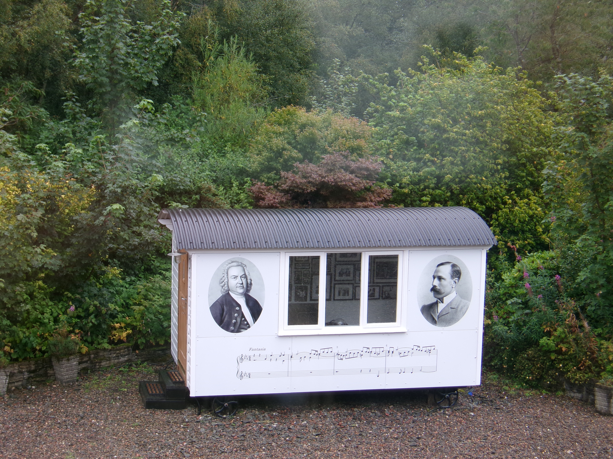

The music room is located opposite the main entrance to Whim House. It is open from 10:00 until 20:00.

On entry, please remove your shoes and place them in the rack on the right-hand side by the door; there are slippers provided which you can wear if you wish.
The entrance door is formed of two separate panels. Please take care when closing it to make sure you don’t catch your hand between the upper and lower sections.
The music room features a vintage Luxman L-5 amplifier which was manufactured in the early 1980’s. CD’s did not exist at the time so, although you can play CD’s using it, there is no ‘CD’ button on the fascia per se – instead on the Input Selector you need to press ‘TUNER’.
Please note also that the amplifier is extremely sensitive, featuring protection circuits which can easily blow; in this case, we have to disconnect the amplifier and replace the fuses. This is bit of a nuisance, although these circuits have kept the amplifier in perfect working order for almost 50 years, so we shouldn’t complain…
To play your own CD
To play a CD from the collection
To play a Vinyl Record
The vintage whiskies are complimentary. Please take the glass with you after use, wash it and return it to the Music Room afterwards for use by the next visitor.
If whisky isn’t to your taste, please feel free to bring your own drinks. There are coasters provided and a towel on the lower shelf of the whisky cabinet in case of accidental spillage.